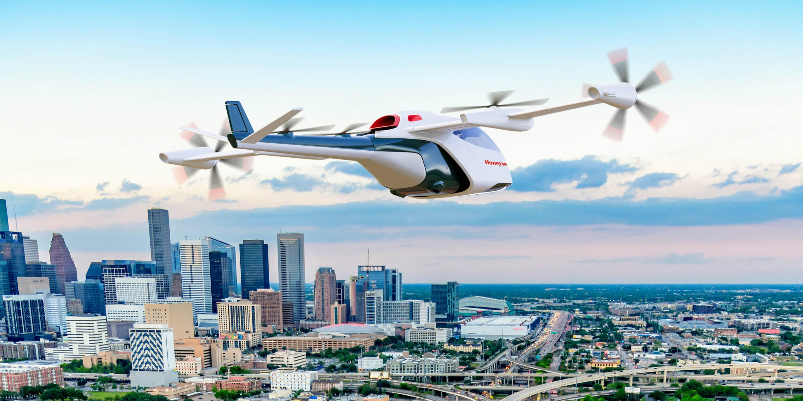

Advanced Air Mobility
The Disruptive Force Transforing Aviation
Advanced Air Mobility paves the way for disruptive innovation in the aviation sector
The Disruptive Force Transforing Aviation
Advanced Air Mobility paves the way for disruptive innovation in the aviation sector
Advanced air mobility (AAM) is spearheading innovative new technology in the aviation industry. Despite a strong history of automation, the sector is yet to create a clear taxonomy towards full autonomy, which is necessary for all stakeholders to agree on the required standards and regulations. This white paper supports a spectrum of human in-, on- and over-the-loop, with increasing levels of remote control and numbers of vehicles handled even as direct human intervention and responsibility for all operations decreases.
Application opportunities for AAM are manifold across passenger and non-passenger (goods and services) transport clusters. Use cases thereby stretch across various geographic expansions, from urban to regional. Behind respective operationalization, two driving stakeholder groups can be differentiated: private (pure commercial focus) and public-private (societal focus with commercial viability as the baseline). To initially adopt and later scale these opportunities, three categories of enablers are vital: social acceptance, operational feasibility and financial viability.
The degree of importance of each category of enablers depends on the use case. For the development of passenger-related use cases, social acceptance is most crucial. Non-passenger applications will thrive through financial viability best achieved by increased levels of automation. AAM adoption is expected to benefit various industries (e.g. healthcare: high speed, better coverage and accessibility); different geographies (e.g. remote areas: better accessibility and lower risk in dangerous surroundings); and people (e.g. (sub)urban transit: faster, increased convenience and more pedestrian space). Some use cases are already being piloted in confined regulatory sandboxes designed to test and derive best practices for the mid-term.
Nevertheless, the ecosystem is not yet ready for large-scale adoption. More cohesive regulations need to be put in place to certify vehicles and autonomous operations. Digital infrastructure needs to be developed to orchestrate seamless airspace operations, while wider physical infrastructure buildup is required to integrate AAM into the existing transport infrastructure.
Looking ahead, AAM will democratize and enable higher degrees of automation for commercial aviation. Yet, many obstacles are yet to be overcome on the road to wider adoption and autonomy. The industry will benefit from implementation roadmaps that accelerate the rollout of AAM, enabling a more prosperous future for the sector.
Innovations such as artificial intelligence, cloud computing, 5G (fifth generation telecommunications), smart infrastructure, electric motors and sensor technologies are rapidly disrupting various industries and sectors of the global economy. Aviation is no different. Despite it being a highly regulated industry, a new industry branch is embedding numerous innovations in the air: advanced air mobility.
Advanced air mobility (AAM) is a broad concept, a playground for innovation that addresses varied topics such as levels of automation, electric aircraft, novel materials and AI route optimization. According to the US Federal Aviation Administration (FAA), advanced air mobility is “an umbrella term for aircraft that are likely highly automated and electric”. This industry branch is still in the research and development (R&D) stage, which allows for strong innovation in the coming years. At the same time, AAM is far enough ahead to consider it a reality and able to already make an impact in the short term.
The future of AAM is electric and is leveraging increased levels of automation. The electric engines of these aircraft support the sector’s path to reach net-zero by 2050 despite the rapid increase in air travel demand (an estimated 40% increase in the number of flights compared to 2019). Electric engines are also quieter than traditional propulsion engines, contributing to noise reduction.
Autonomous capabilities enabling unmanned or remotely supervised operations can help the aviation sector in several ways. They can help address the current shortage of pilots driven by the post-COVID rebound in travel, which is expected to accentuate in the near future (Airbus and Boeing estimate between 585,0005 and 649,0006 new pilots will be needed by 2040). Autonomy will also make the business models related to AAM operations more robust. The caveat is: the autonomy timeline is still uncertain. Currently, tasks in conventional aircraft are automated to a high degree, but several additional steps are needed to make these uncrewed operations a reality.
In order to enable these unmanned or remotely supervised operations, regulation and public acceptance will need to keep pace with the rapid technological developments. All stakeholders must appreciate the positive societal impact that AAM can have in a wide variety of sectors and geographies. This impact can be leveraged with different stages of automated operations on board. This article focuses first on the wide range of AAM use cases. It then highlights key factors to enable further developments and deployments, and areas where the public and private sectors need to work together. Finally, it zooms into three important, early-adopter sectors that are expected to propel the sector further.
Application opportunities for AAM are manifold across passenger and non-passenger (goods and services) transport clusters. Use cases thereby stretch across various geographic expansions, from urban to regional. Behind respective operationalization, two driving stakeholder groups can be differentiated: private (pure commercial focus) and public-private (societal focus with commercial viability as the baseline). To initially adopt and later scale these opportunities, three categories of enablers are vital: social acceptance, operational feasibility and financial viability.
The degree of importance of each category of enablers depends on the use case. For the development of passenger-related use cases, social acceptance is most crucial. Non-passenger applications will thrive through financial viability best achieved by increased levels of automation. AAM adoption is expected to benefit various industries (e.g. healthcare: high speed, better coverage and accessibility); different geographies (e.g. remote areas: better accessibility and lower risk in dangerous surroundings); and people (e.g. (sub)urban transit: faster, increased convenience and more pedestrian space). Some use cases are already being piloted in confined regulatory sandboxes designed to test and derive best practices for the mid-term.
Nevertheless, the ecosystem is not yet ready for large-scale adoption. More cohesive regulations need to be put in place to certify vehicles and autonomous operations. Digital infrastructure needs to be developed to orchestrate seamless airspace operations, while wider physical infrastructure buildup is required to integrate AAM into the existing transport infrastructure.
Looking ahead, AAM will democratize and enable higher degrees of automation for commercial aviation. Yet, many obstacles are yet to be overcome on the road to wider adoption and autonomy. The industry will benefit from implementation roadmaps that accelerate the rollout of AAM, enabling a more prosperous future for the sector.
Innovations such as artificial intelligence, cloud computing, 5G (fifth generation telecommunications), smart infrastructure, electric motors and sensor technologies are rapidly disrupting various industries and sectors of the global economy. Aviation is no different. Despite it being a highly regulated industry, a new industry branch is embedding numerous innovations in the air: advanced air mobility.
Advanced air mobility (AAM) is a broad concept, a playground for innovation that addresses varied topics such as levels of automation, electric aircraft, novel materials and AI route optimization. According to the US Federal Aviation Administration (FAA), advanced air mobility is “an umbrella term for aircraft that are likely highly automated and electric”. This industry branch is still in the research and development (R&D) stage, which allows for strong innovation in the coming years. At the same time, AAM is far enough ahead to consider it a reality and able to already make an impact in the short term.
The future of AAM is electric and is leveraging increased levels of automation. The electric engines of these aircraft support the sector’s path to reach net-zero by 2050 despite the rapid increase in air travel demand (an estimated 40% increase in the number of flights compared to 2019). Electric engines are also quieter than traditional propulsion engines, contributing to noise reduction.
Autonomous capabilities enabling unmanned or remotely supervised operations can help the aviation sector in several ways. They can help address the current shortage of pilots driven by the post-COVID rebound in travel, which is expected to accentuate in the near future (Airbus and Boeing estimate between 585,0005 and 649,0006 new pilots will be needed by 2040). Autonomy will also make the business models related to AAM operations more robust. The caveat is: the autonomy timeline is still uncertain. Currently, tasks in conventional aircraft are automated to a high degree, but several additional steps are needed to make these uncrewed operations a reality.
In order to enable these unmanned or remotely supervised operations, regulation and public acceptance will need to keep pace with the rapid technological developments. All stakeholders must appreciate the positive societal impact that AAM can have in a wide variety of sectors and geographies. This impact can be leveraged with different stages of automated operations on board. This article focuses first on the wide range of AAM use cases. It then highlights key factors to enable further developments and deployments, and areas where the public and private sectors need to work together. Finally, it zooms into three important, early-adopter sectors that are expected to propel the sector further.
SYSTEMATIZING AAM USE CASES
Different lenses can be applied when clustering AAM use cases. Figure 2 clusters use cases according to three key categories: the nature of what is transported (people, goods or other uses), the key stakeholder type driving the implementation (private or public-private), and the geography where the operations take place (urban, suburban rural or regional).
The first category of use cases, organized by the nature of what is transported, comprises three main clusters: passenger transport, cargo transport and other services (the final category providing a service rather than transporting people or goods from point a to point b). For the development of passenger-related use cases, social acceptance will be key. As a result, it is expected that increased levels of automation will only be achieved well after 2030. Automation is expected to be taken up more rapidly for the other two categories, which will also rely on autonomous capabilities to be economically attractive.
These three clusters can be further split according to the interest groups that are key to driving the use-cases’ commercialization into private-driven and public-private driven. Private-driven use cases will require a robust business model with strict emphasis on cost efficiency and operational effectiveness to achieve financial viability, so that they can outperform alternative modes when measured through unit economics. Public-private driven use cases will rely on government funding for their financial viability. This public funding would be backed by the strong societal impact that the use case can unlock (e.g. ambulance services).
Last, use cases are mapped according to their geographical scope. As seen in Figure 2, a single use case can have value in various geographical contexts. For example, point-to-point shuttles can operate in an urban environment for transporting passengers from train stations to sports events, as well as in regional settings to enhance connectivity between remote communities and nearby urban centres. Depending on the geographic scope, however, some operational considerations differ, and the associated levels of risk can vary (e.g. the difference between performing operations in remote areas with low population density vs. areas that are densely populated – the latter being riskier due to the larger impact in case of an accident).
KEY ENABLING FACTORS
The first category of use cases, organized by the nature of what is transported, comprises three main clusters: passenger transport, cargo transport and other services (the final category providing a service rather than transporting people or goods from point a to point b). For the development of passenger-related use cases, social acceptance will be key. As a result, it is expected that increased levels of automation will only be achieved well after 2030. Automation is expected to be taken up more rapidly for the other two categories, which will also rely on autonomous capabilities to be economically attractive.
These three clusters can be further split according to the interest groups that are key to driving the use-cases’ commercialization into private-driven and public-private driven. Private-driven use cases will require a robust business model with strict emphasis on cost efficiency and operational effectiveness to achieve financial viability, so that they can outperform alternative modes when measured through unit economics. Public-private driven use cases will rely on government funding for their financial viability. This public funding would be backed by the strong societal impact that the use case can unlock (e.g. ambulance services).
Last, use cases are mapped according to their geographical scope. As seen in Figure 2, a single use case can have value in various geographical contexts. For example, point-to-point shuttles can operate in an urban environment for transporting passengers from train stations to sports events, as well as in regional settings to enhance connectivity between remote communities and nearby urban centres. Depending on the geographic scope, however, some operational considerations differ, and the associated levels of risk can vary (e.g. the difference between performing operations in remote areas with low population density vs. areas that are densely populated – the latter being riskier due to the larger impact in case of an accident).
Successful, widespread implementation of AAM use cases over the coming years will be driven by three categories of enablers: social acceptance, operational feasibility and financial viability. Figure 3 outlines the key components of these enabler categories. It simplifies the relationships between enabling factors and, due to clarity reasons, does not illustrate the interdependences among the different components. For example, clear understanding of the positive social and environmental impact of AAM technologies will ensure that both funding and the necessary regulation – for both the AAM aircraft and the surrounding infrastructure – are put in place.
Trust is the first cornerstone of social acceptance, with perceived safety and privacy playing crucial roles. Education and proof of existing capabilities will significantly contribute to this understanding. Beyond establishing trust, achieving social acceptance will be facilitated by a tangible public benefit. This includes deploying AAM instead of more polluting alternatives, and deploying AAM to address current societal challenges, such as improving healthcare or enhancing the inclusivity of remote communities. In order to facilitate adoption, the integration must be seamless for users, providing an intuitive experience that is well-connected with existing systems.
Operational feasibility is also critical for the implementation of AAM. The technology is maturing sufficiently to soon enable safe, reliable and recurrent operations, and many operators anticipate scaling operations before the decade’s end. Regulations must evolve to keep pace to enable fast and reliable certification of new systems and to enable the standardization of the ecosystem. To this end, infrastructure will be key – see Box 2 that zooms in on infrastructure needs.
Finally, financial viability is essential as it not only sustains operations but also attracts the necessary funds for the substantial initial capital expenditures. Not only must the sector demonstrate that the economic model is viable and more effective than existing alternatives, it must also prove that there is sufficient market depth and that the timeline towards commercialization will not be too long. Funding should ideally come from both public and private sectors, as both societal and economic benefits are expected from this technology. This multistakeholder approach is crucial for the longterm success, adoption, and integration of these technologies into mainstream society.
When referring back to the main use-case clusters of Figure 2, the key enablers that unlock passenger transport are different from those that unlock cargo transport and other services. Hence, a split between passenger- and non-passenger use cases seems pertinent when highlighting the enablers of the different use cases.
Trust is the first cornerstone of social acceptance, with perceived safety and privacy playing crucial roles. Education and proof of existing capabilities will significantly contribute to this understanding. Beyond establishing trust, achieving social acceptance will be facilitated by a tangible public benefit. This includes deploying AAM instead of more polluting alternatives, and deploying AAM to address current societal challenges, such as improving healthcare or enhancing the inclusivity of remote communities. In order to facilitate adoption, the integration must be seamless for users, providing an intuitive experience that is well-connected with existing systems.
Operational feasibility is also critical for the implementation of AAM. The technology is maturing sufficiently to soon enable safe, reliable and recurrent operations, and many operators anticipate scaling operations before the decade’s end. Regulations must evolve to keep pace to enable fast and reliable certification of new systems and to enable the standardization of the ecosystem. To this end, infrastructure will be key – see Box 2 that zooms in on infrastructure needs.
Finally, financial viability is essential as it not only sustains operations but also attracts the necessary funds for the substantial initial capital expenditures. Not only must the sector demonstrate that the economic model is viable and more effective than existing alternatives, it must also prove that there is sufficient market depth and that the timeline towards commercialization will not be too long. Funding should ideally come from both public and private sectors, as both societal and economic benefits are expected from this technology. This multistakeholder approach is crucial for the longterm success, adoption, and integration of these technologies into mainstream society.
When referring back to the main use-case clusters of Figure 2, the key enablers that unlock passenger transport are different from those that unlock cargo transport and other services. Hence, a split between passenger- and non-passenger use cases seems pertinent when highlighting the enablers of the different use cases.
